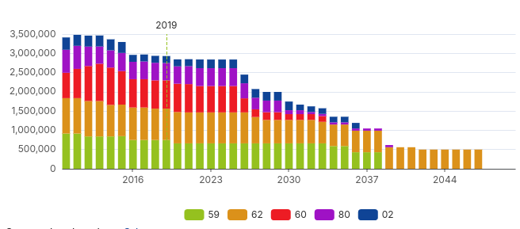
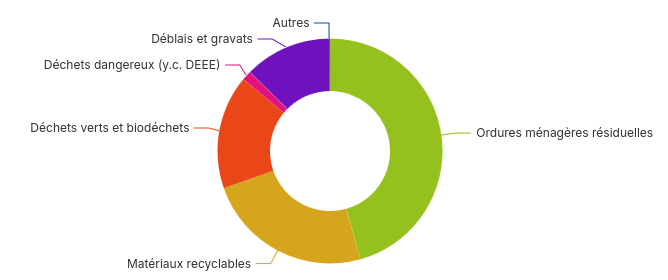

Graphiques (dataviz)
La bibliothèque fournie quelques graphiques de base pouvant être utiliser directement.
Ma sa grande force réside dans le fait de pouvoir créer vos propres graphiques à partir de n'importe quelle bibliothèque (ECharts, Rechart, Chart.js, D3.js, etc.).
Graphiques standards
YearSerie
Adapté aux représentations de valeurs annuelles.
| Nom | Type | Requis | Par défaut | Description |
|---|---|---|---|---|
dataset |
string |
✳️ | — | Identifiant du dataset à utiliser. |
yearKey |
string |
✳️ | — | Nom de la colonne contennant l'année. |
valueKey |
string |
✳️ | — | Nom de la colonne contenant la valeur numérique |
categoryKey |
string |
— | Colonne pour grouper les données par catégorie (ex : type, secteur...). | |
title |
string |
— | Titre du graphique. | |
stack |
boolean |
false |
Empile les séries si plusieurs catégories sont présentes. | |
yearMark |
number \| string |
— | Année à mettre en évidence (ex : 2021 ou useControl('annee') ) |
|
type |
'bar' \| 'line' \| 'area' |
'line' |
Type de graphique à afficher. |

Pie
Graphique "camembert". Si des catégories sont dupliquées, les valeurs de celles-ci sont automatiquement sommées.
| Nom | Type | Requis | Par défaut | Description |
|---|---|---|---|---|
dataset |
string |
✳️ | — | Identifiant du dataset à utiliser. |
dataKey |
string |
✳️ | — | Nom de la colonne contenant les valeurs numériques à représenter. |
nameKey |
string |
✳️ | — | Nom de la colonne contenant les catégories (libellés des parts). |
donut |
boolean |
false |
Affiche le graphique en style donut (camembert avec un trou central). | |
unit |
string |
Unité à afficher (ex: %, kg, etc.) | ||
title |
string |
Titre du graphique |

Exemple
<Dashboard>
<Dataset
id="dma_collecte_traitement"
resource='sinoe-(r)-destination-des-dma-collectes-par-type-de-traitement/lines'
url="https://data.ademe.fr/data-fair/api/v1/datasets"
type='datafair'
pageSize={5000}>
<Filter field='L_REGION'>Hauts-de-France</Filter>
<Filter field='L_TYP_REG_DECHET' operator='ne'>Encombrants</Filter>
<Filter field='ANNEE'>{useControl('annee')}</Filter>
<Transform>SELECT [L_TYP_REG_DECHET], [ANNEE], [C_DEPT], SUM([TONNAGE_DMA]) as [TONNAGE_DMA] FROM ? GROUP BY [ANNEE], [C_DEPT], [L_TYP_REG_DECHET]</Transform>
<Transform>{(data) => data.map(row=>({pouette:4, ...row}))}</Transform>
<Producer url="https://www.sinoe.org">Ademe</Producer>
<Producer url="https://odema-hautsdefrance.org/">Odema</Producer>
</Dataset>
<ChartPie
// Identifiant du dataset (obligatoire si plusieurs dataset)
dataset="destination-dma"
// Colonne qui contient les valeurs numériques
dataKey='TONNAGE_DMA'
// Colonne qui contient les catégories
nameKey='L_TYP_REG_DECHET'
// Variante "donut" (trou central)
donut
/>
</Dashboard>
Développer vos propres graphiques 🔧
Il est possible d'écrire un composant dont le rendu est un visuel. N'importe quel bibliothèque peut-être utilisée, ou même du HTML.
Graphique Echarts
Api-dashboard fourni un composant <ChartEcharts> permettant de faciliter la création de graphiques Echarts.
Il suffit de fournir un objet de configuration ECharts via la propriété options.
Pour un usage plus avancé, la propriété ref permet de récupérer l'instance ECharts (réagir à des évenements, déclencher des actions sur le graphique).
| Propriété | Type | Description |
|---|---|---|
option |
object |
Objet de configuration ECharts |
ref |
React.RefAttributes<EChartsReact> |
Référence de l'instance ECharts |
import React, { useRef, useEffect } from "react";
import { ChartEcharts } from "@geo2france/api-dashboard";
export default function MonGraphiqueCustom() {
const chartRef = useRef(null);
useEffect(() => {
if (chartRef.current) {
const mychart = chartRef.current.getEchartsInstance();
// Cf. https://echarts.apache.org/en/api.html#echartsInstance
mychart.on('click', (e) => ( console.log('clicked',e) ) );
}
}, [ ]);
// Cf. https://echarts.apache.org/en/option.html
const options = {
xAxis: {
type: 'category',
data: ['Mon', 'Tue', 'Wed', 'Thu', 'Fri', 'Sat', 'Sun']
},
yAxis: {
type: 'value'
},
series: [
{
data: [150, 230, 224, 218, 135, 147, 260],
type: 'line'
}
]
};
return (
<ChartEcharts options={options} ref={chartRef} />
);
}